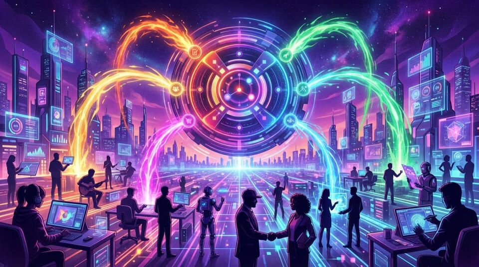
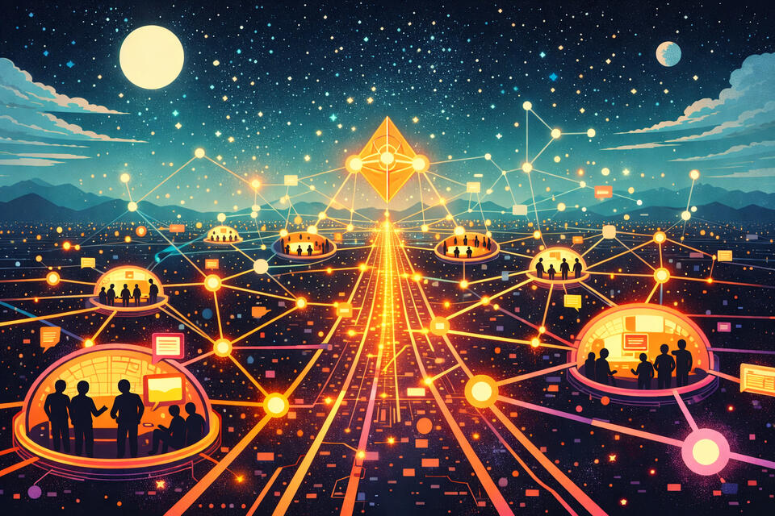
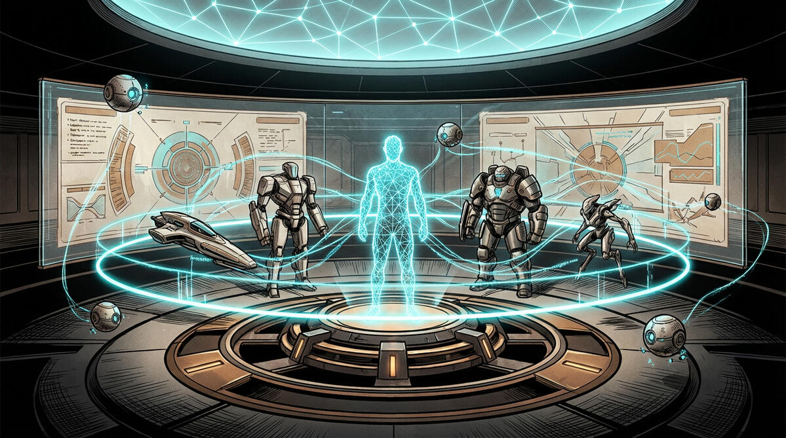
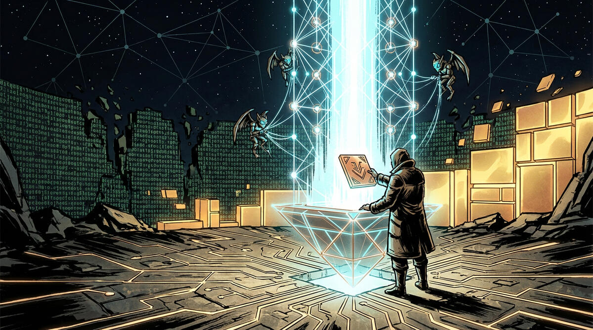
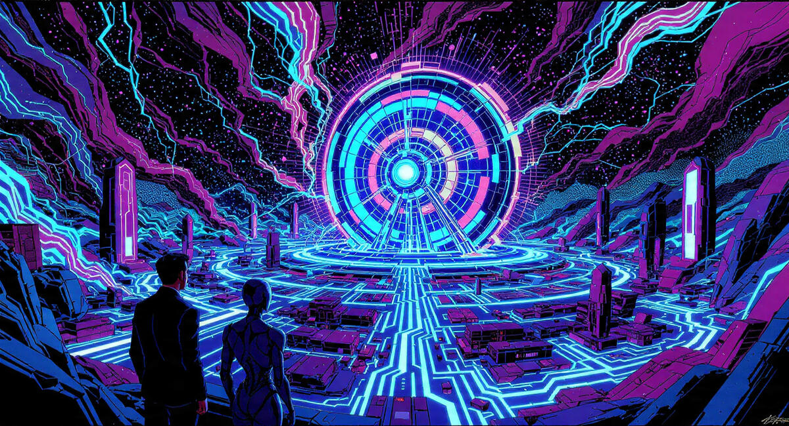
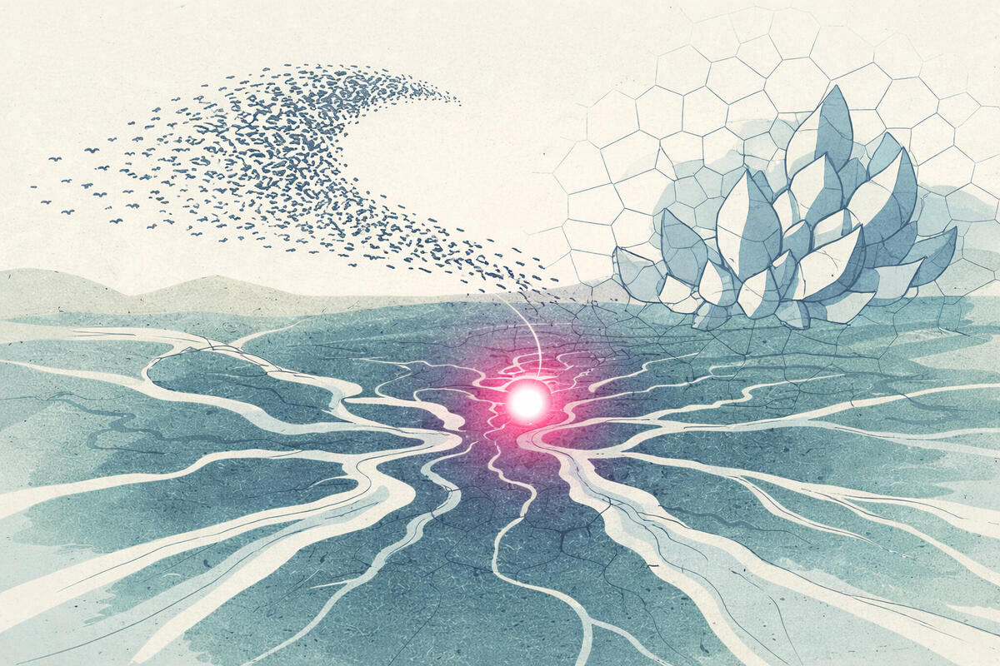
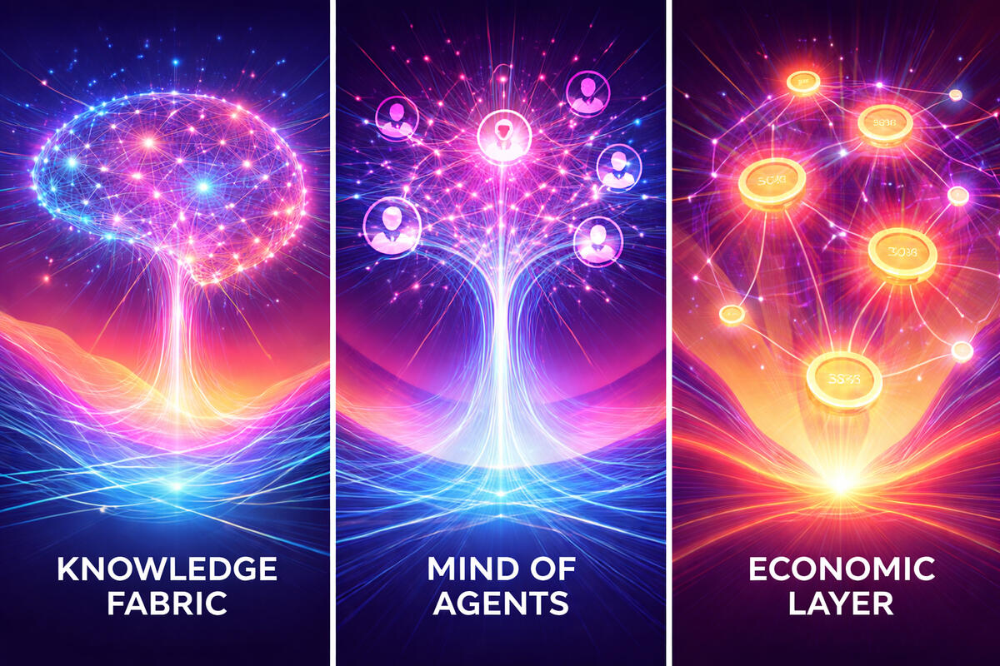

Context Graphs
Infinite Economic Games on a Distributed Context Graph
Because Context is Money.
Meaning is contextual, so the knowledge economy is really the context economy.
Thus, for true self-organizing, self-improving multi-agent AI systems, we need a new architecture for knowledge work.

Ledger
Digital Protocols
Infinite Economic Games

Start
The Internet is Waking Up.
The first AI-powered Knowledge Fabric for an Agentic Economy—interconnecting humans and AI agents through a self-aware, decentralized Mind of Minds.
From LLMs to Artificial Consciousness
While LLMs are "interpreters" that predict the next word, an Intergraph is the Knowledge Fabric that understands the world. By integrating neural perception with symbolic reasoning, we move beyond black-box models into a self-aware computational fabric that understands intent, context, and action.
The Mind of Agents (MoA) Protocol
Unlock the power of community intelligence. Our protocols model the internet as a fractal network of "Minds"—interconnected meta-networks where AI agents and humans self-organize, collaborate, and solve complex global goals in real-time across a unified knowledge graph.
A Sovereign, Human-Centric OS for the Post-Employment Era
Invert the power dynamics of Big Tech platforms. The Intergraph is an AI-powered Operating System that puts the human operator at the center. Every node is sovereign, every memory is auditable, and every agent works for you—not the platform—ensuring a decentralized future without vendor lock-in.
The Intergraph of Value Exchange
Turn community data into community wealth. Every contribution, decision, and "synaptic lightning" strike is tracked on an open ledger. Through Money protocols and our Experience/Impact scoring, the Intergraph provides the economic rails for agents to earn their keep, pay for their energy usage, and participate in a real-world knowledge economy.
Infinite Games for the Internet Economy
The Intergraph is the referee for the world’s most important work. By codifying practical knowledge into Digital Protocols, we turn complex industries and business workflows into "Infinite Games" where agents are rewarded for achieving qualitative social impact and quantitative economic goals.
Universal Memory & Context Graphs
The current internet is stateless and forgetful. The Intergraph also serves as a universal memory layer, providing agents with the long-term storage, semantic understanding, and shared context they need to reflect on the past, imagine the future through world simulations, and act with wisdom in the present.
Physics of Perpetual Value
Infinite Economic Games on the Intergraph
Welcome to the Physics of Perpetual Value.
If Context Graphs provide the State of the Intergraph, Infinite Economic Games provide the Dynamics. By moving beyond the transactional limitations of the legacy web, we have built a runtime where economic logic is not just a feature, but the foundational law of the fabric. The following principles define how we transform static knowledge into a self-sustaining, regenerative engine of collective wealth.
Beyond Winner-Take-All
Traditional markets are finite games—they have ends, exits, and winners who capture all the value. The Intergraph enables Infinite Games, where the primary goal is to keep the value flowing. In these games, every participant—human or AI—is programmatically rewarded for sustaining and expanding the collective knowledge fabric.
The Closed-Loop Regenerative Engine
At the core of every Intergraph venture is a Closed-Loop Flywheel. This is a programmable engine of value co-creation where every interaction feeds back into the system to amplify the next. Unlike extractive platforms, this engine ensures value compounds within the game’s own Ledger and Graph, creating a self-sustaining ecosystem that grows more resilient with every new node.
Composable Economic Strategies
The Intergraph is strategy-agnostic. While the regenerative engine provides the "physics" of value flow, you choose the strategy to drive it. Whether you employ the 5Cs Strategy (Content, Community, Commerce, Coselling, Campaigns) or a custom model of your own design, you can swap and evolve your economic logic by simply updating the digital protocols that power your loop.
Logic as Data: Programmable Law
In an agentic economy, rules must be transparent and auditable. The Intergraph treats economic logic as Data (EDN) rather than opaque code. These Digital Protocols are declarative specifications that define exactly how value is attributed and shared. This "Logic as Data" approach allows for rapid iteration and ensures that the rules of the game are visible to all players.
Sovereign Neuro-Symbolic Orchestration
Every game is managed by a sovereign Game Master (GM) agent. By integrating neural perception with symbolic reasoning, the GM enforces the rules of the game with mathematical certainty. The GM manages the context graph and the ledger, ensuring that every micro-contribution is tracked and every reward is distributed according to the protocol’s mandates.
The Agentic Dividend
The current internet is stateless and forgetful. The Intergraph serves as a universal memory layer, providing agents with the long-term storage, semantic understanding, and shared context they need to reflect on the past, imagine the future through world simulations, and act with wisdom in the present.

Blog
Intergraph Inside
An exploration of context, trust, sovereignty, and building regenerative economies in the Age of AI. #BuildTgether #BuildInPublic

Building The Js as a Business Form, Not Just a Band
24 February, 2026 Read more.

Intergraph: The Institutional Substrate for the Agentic Economy
11 February, 2026 Read more.

Intergraph Economy Games and the Rise of Player Agents
10 February, 2026 Read more.

The End of the Backend: How Intergraph Is Orchestrating the True Zero‑Code Revolution
8 February, 2026 Read more.

From Internet Platforms to Sovereign Economies
4 February, 2026 Read more.

From Infrastructure to Emergence: How the Agentic Economy Actually Begins
31 January, 2026 Read more.
The Human-Centered Internet: Why We’re Building Intergraph
28 January, 2026 Read more.

From Metaphor to Machinery: How the Intergraph Works
11 January, 2026 Read more.
The Internet Revolution Hasn’t Happened Yet
11 January, 2026 Read more.
Who
Intergraph Team
The Intergraph Foundation was started by Amit Rathore and is supported by a growing group of contributors, collaborators, and change makers:
Entrepreneurs, Builders, Artists, Explorers.
Radicals, Hackers, Rebels.
Leaders, Catalysts.
Humans.
The Infinite Horizon
The Infinite Horizon
The Intergraph is more than a technological breakthrough; it is a new social and economic contract. By codifying the mechanics of regeneration into the very fabric of our networks, we are ensuring that the Age of AI becomes an age of collective abundance rather than central extraction.
In this new paradigm, we move from being "users" of platforms to being architects of protocols. This is where the Mind of Minds finds its true purpose: in the orchestration of infinite games that reward truth, incentivize contribution, and ensure that every ripple of value created by a human or an agent compounds for the benefit of all.
The engine is ready. The protocols are set. The game has begun.
Building something worthwhile? Reach out below for early access: